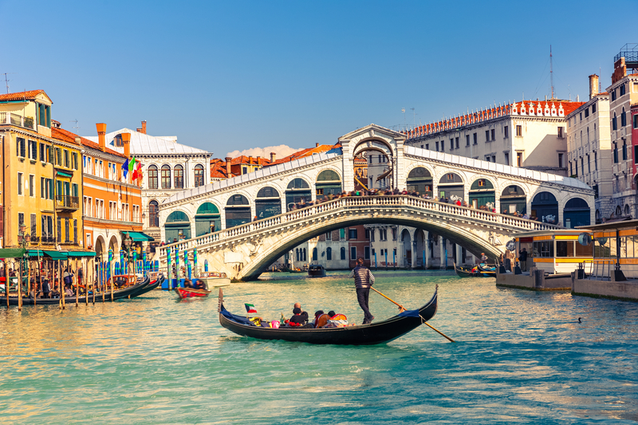
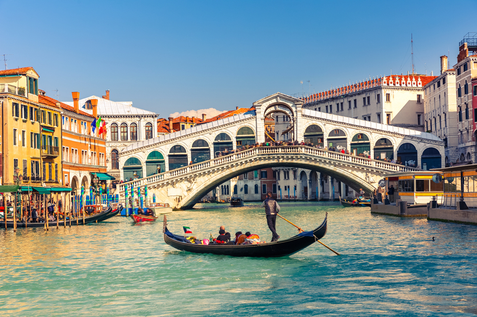
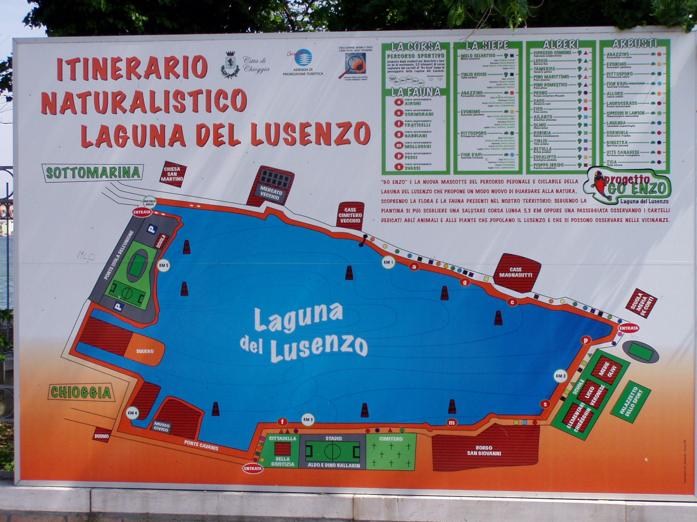
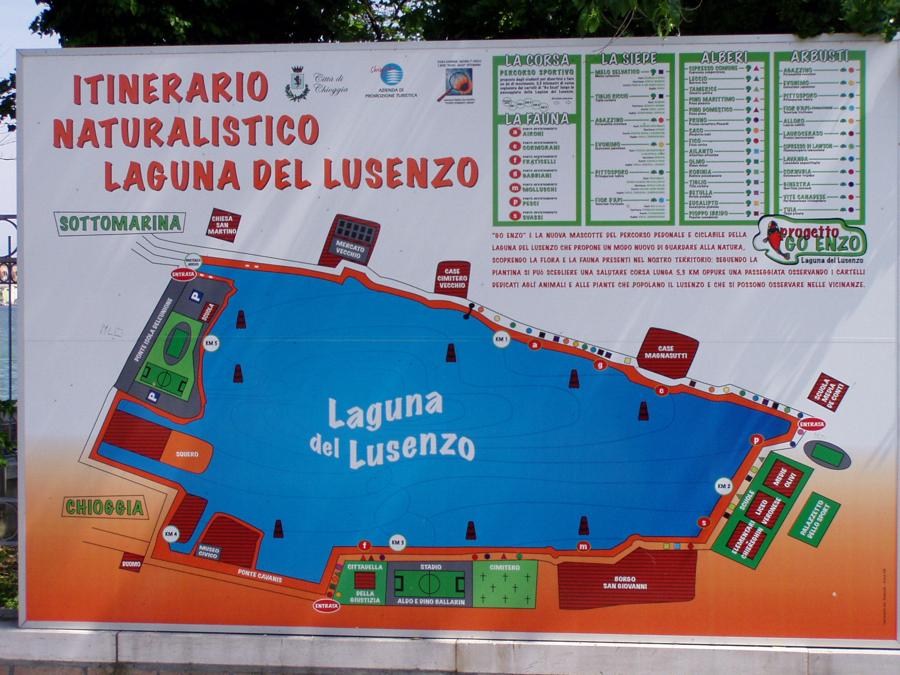

Un pò di storia
Chioggia è una suggestiva cittadina situata nella parte meridionale della laguna veneta, spesso soprannominata la “piccola Venezia” per la sua struttura urbana caratterizzata da canali, ponti e calli strette che richiamano l’atmosfera unica della Serenissima. Fondata in epoca romana, Chioggia si è sviluppata nel corso dei secoli come un importante centro commerciale e peschereccio, grazie alla sua posizione strategica tra mare e laguna.
La cultura di Chioggia è quella tipica di una città di mare dove l’attività principale per secoli è stata la pesca. Chioggia ha la seconda flotta per dimensioni di pescherecci. Tipico di Chioggia da visitare è il mercato del pesce. I piatti tradizionali sono sarde in saor, baccalà mantecato, crema fritta Il centro storico, con le sue case colorate e i vicoli pittoreschi, offre un’atmosfera autentica e genuina, perfetta per passeggiate all’insegna della scoperta.
Le chiese storiche, come la Cattedrale di Santa Maria Assunta, testimoniano la ricchezza culturale e religiosa della città. Chioggia è inoltre nota per le sue feste tradizionali, come la Sagra del Pesce, e per i suoi prodotti tipici, tra cui pesce fresco, vongole veraci e moeche (granchi di piccola taglia).
La città è un crocevia di storia, cultura e natura, con la laguna che la circonda offrendo paesaggi mozzafiato e possibilità di escursioni tra le isole vicine, come Pellestrina e Sottomarina. Nonostante la sua vicinanza a Venezia, Chioggia conserva una propria identità forte e distintiva, rendendola una meta ideale per chi desidera immergersi nella vita quotidiana veneta lontano dai flussi turistici più intensi.
Cosa Visitare a Chioggia e Sottomarina
Chioggia e Sottomarina sono due volti della stessa meraviglia: una città lagunare sospesa nel tempo e una vivace località balneare, entrambe ricche di fascino, storia e attività per ogni tipo di visitatore.
Escursioni in barca e tour nella Laguna
Chioggia è la porta ideale per esplorare la Laguna Veneta. Diverse agenzie locali offrono tour in barca che ti porteranno alla scoperta delle isole della laguna, come:
• Isola di Pellestrina: Un’isola lunga e stretta che si trova tra la laguna e il mare Adriatico. Isola di pescatori e merlettaie, di spiagge poco affollate e case colorate affacciate sulla laguna.
• Isole minori di Venezia: meno conosciute e affollate ma non meno importanti e affascinanti. Potrete fare una tappa e farvi incantare dall’isola di Burano, Murano, Torcello, la Certosa, Sant’Erasmo, Poveglia, San Severolo e scoprire le peculiarità della laguna veneta.
• Escursioni in Motonave: Parti per una gita in motonave per scoprire i segreti della laguna, visitando le isole minori, i boschi di canneto e gli antichi casoni, tipiche abitazioni dei pescatori.
 

Esplora il Centro Storico di Chioggia
Chioggia, con le sue strette calli, i canali e le case colorate, è una città che sembra fermata nel tempo. La sua atmosfera unica che ricorda un antico borgo di pescatori, ti avvolgerà. Non perdere:
• Il Mercato del Pesce di Chioggia: Un'esperienza sensoriale unica, dove il pesce fresco appena pescato viene esposto su bancarelle vivaci.
• Piazza Vigo e la Torre dell’Orologio: La piazza centrale di Chioggia è un luogo perfetto per passeggiare. La torre dell’orologio offre altresì una vista panoramica incredibile sulla città e sulla laguna, torre in cui risiede l'orologio da torre medievale funzionante più antico del mondo.
• Le Chiese e i Palazzi Storici: Chioggia è ricca di edifici storici, come la Cattedrale di Santa Maria Assunta e il Palazzo Granaio, che raccontano la storia della città attraverso la loro architettura.
• Il mercato di Chioggia tutti i giovedì.
Divertiti a Sottomarina: Sole, Mare e Sport
Sottomarina è la località balneare per eccellenza di Chioggia, famosa per la sua lunga spiaggia sabbiosa, ideale per rilassarsi al sole o praticare sport acquatici. Ecco alcune attività da non perdere:
• Spiaggia di Sottomarina: Con oltre 10 km di sabbia dorata, la spiaggia è perfetta per famiglie, coppie e gruppi di amici. Sia che tu voglia prendere il sole, fare una passeggiata lungo la riva o partecipare a giochi di gruppo, la spiaggia di Sottomarina è sempre una buona scelta.
• Sport : Se ami il mare e l’avventura, Sottomarina offre numerose opportunità per praticare sport acquatici come il windsurf, il kitesurf, il paddle e il beach volley. Diverse scuole locali offrono corsi per principianti e noleggio attrezzature.
• Passeggiate in Bicicletta o a Piedi: Sottomarina e Chioggia sono perfette da esplorare a piedi o in bicicletta. Puoi seguire il lungomare, addentrarti nel centro storico o scoprire le zone naturali circostanti. Per gli appassionati di natura, l’isola di Pellestrina è un luogo ideale per escursioni in bici.
 

Eventi e Feste Locali
Chioggia e Sottomarina sono anche un punto di riferimento per eventi culturali e feste tradizionali che animano la città durante tutto l'anno:
• Festa del Pesce: Ogni anno, a Chioggia, viene celebrata una delle feste più tradizionali, durante la quale potrai gustare il pesce fresco preparato in tantissimi modi diversi. La festa include anche musica dal vivo, spettacoli e divertimento per tutta la famiglia.
• Eventi Estivi e Concerti: Durante l'estate, Chioggia ospita numerosi concerti, spettacoli teatrali e festival musicali. Non perdere l’occasione di goderti una serata sotto le stelle con la musica dal vivo che anima le piazze e i luoghi storici della città.
• Palio della Marciliana: Vieni a trovarci nella terza domenica di giugno dove la città di Chioggia rievoca le atmosfere del Trecento, con le vicende collegate alla guerra tra Veneziani e Genovesi con il Palio de La Marciliana.
Vita Notturna a Chioggia e Sottomarina
La vita notturna di Chioggia e Sottomarina è vivace e variegata. Puoi scegliere tra una serata tranquilla in un ristorante tipico, un aperitivo sul lungomare o una notte di festa:
• Aperitivi e Lounge Bar: Molti bacari e locali offrono aperitivi a base di prodotti freschi locali, con vista sul mare o sui canali di Chioggia. Perfetti per un momento di relax e divertimento.
• Discoteche e Pub: Sottomarina è famosa per i suoi locali notturni, dove potrai ballare fino a tardi con vista sul mare.